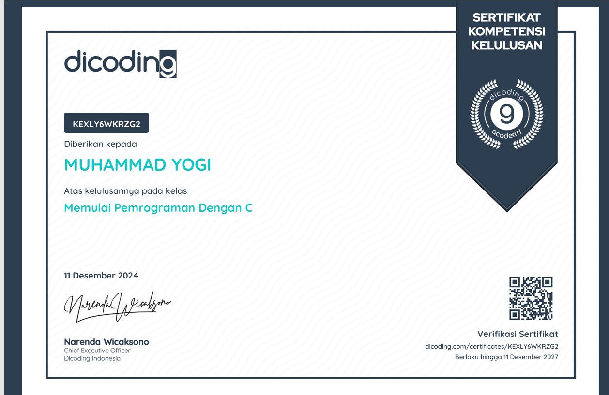
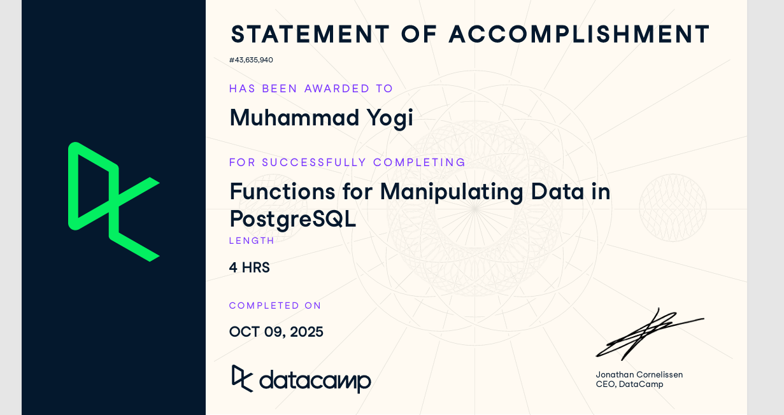

Berikut beberapa proyek yang telah saya kerjakan selama perjalanan belajar saya di bidang teknologi informasi.
| No | Nama Proyek | Deskripsi | Tahun | Teknologi |
|---|---|---|---|---|
| 1 | Functions for Manipulating Data in PostgreSQL | memberi saya pemahaman tentang cara menggunakan fungsi bawaan PostgreSQL dalam kueri SQL untuk memanipulasi berbagai jenis data, termasuk string, karakter, numerik, dan tanggal/waktu.dan juga akan mendapatkan pengantar tentang kemampuan pencarian teks lengkap yang canggih untuk mengindeks dan mencocokkan kata kunci dalam dokumen PostgreSQL. | 2025 | MySQL,PHP |
| 2 | Dicoding Academy | Kelas ini ditujukan untuk pemula yang ingin mempelajari dasar pemrograman bahasa C dengan mengacu pada standar industri. Di akhir kelas, siswa dapat membuat program C atau c++. | 2024 | C++ |
| 3 | Desain Landing Page Portofolio | Landing page pribadi untuk menampilkan informasi diri dan project saya dengan kreatifitas tersendiri. | 2025 | HTML, CSS, VSCode |
| Total Proyek: 3 | memahami teori dan mengimplementasikannya dalam pembelajaran | ||||
|

memahami dan mengimplementasikan pembelajaran mengenai kode C pada Algoritma Pemograman di aplikasi C++ |

Merancang dan mengimplementasikan fungsi SQL untuk mengelola serta memproses data mahasiswa menggunakan PostgreSQL secara efektif |